ТЕМА 5. Обробка електричних сигналів
1. Очікуючий мультивібратор (одновібратор).
2. Модуляція сигналів.
2.1. Амплітудна модуляція.
2.2. Частотна модуляція.
3. Електронна арифметика.
3.1. Загальні відомості про інформацію.
3.2. Представлення чисел в сучасних цифрових пристроях.
3.3. Арифметичні основи цифрових пристроїв.
1. Очікуючий мультивібратор (одновібратор)
На виході очікуючого мультивібратор або одновібратора є два дозволених стани – високий рівень і низький рівень, але тільки один з них стійкий. Мультивібратор видає один вихідний імпульс при надходженні на його вхід сигналу запуску, тобто при надходженні на вхід негативного імпульсу запуску (Vt) на виході з'являється позитивний вихідний імпульс Vо1. Вихідний імпульс має тривалість Т, коли
на виході зберігається квазістійкий стан. Крім назви одновібратор, можна зустріти й інші назви очікуючого мультивібратора, наприклад: розширник імпульсів і імпульсний генератор. Назва розширник імпульсів відображає той факт, що тривалість вихідного імпульсу виявляється більше тривалості імпульсу, що його запускає T1 > Т.
Очікуючі мультивібратори знайшли широке застосування в електроних схемах. Крім вищезгаданого розширника імпульсів, вони застосовуються також для виключення небажаних імпульсів (імпульсів перешкод). Схема реагує тільки на перший імпульс запуску, а наступні імпульси, які з'являються протягом деякого проміжку часу роботи схеми, тобто тривалості вихідного імпульсу Т, ігноруються. Такі мультивібратори називаються мультивібраторами без повторного запуску. Ця властивість використається для боротьби з ”тремтінням” контактів перемикачів у клавіатурах.
При замиканні у всіх механічних контактах протягом деякого часу спостерігається тремтіння, що приводить до появи короткочасних імпульсів, які експоненціально-затухают. Якщо одновібратор запускається першим імпульсом від перемикача, а потім залишається у квазістійкому стані протягом досить довгого часу, протягом якого імпульси, викликані тремтінням, згаснуть, то такий одновібратор буде ефективним ”противотримтевим захистом” при замиканні перемикача.
Основна вимога для таких одновібраторів полягає в тому, що тривалість його вихідного імпульсу повинна перевищувати тривалість послідовності імпульсів тремтіння контакту перемикача (для більшості типів перемикачів звичайно вважається достатньою тривалість 5 мс).
Діапазон всіх можливих застосувань одновібраторів занадто широкий: генерація або розширення імпульсів, ”противотримтевий захист” контактів, поліпшення форми імпульсів, перемикання, а також синхронізація функцій схем (особливо цифрових). На рис. 1. представлено схему очікуючого мультивібратора на операційному підсилювачі і його часові діаграми.
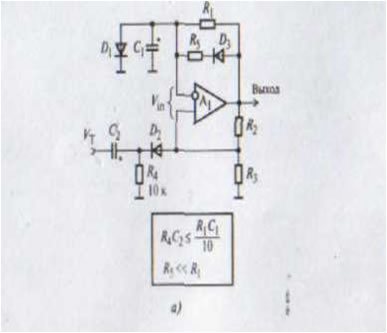 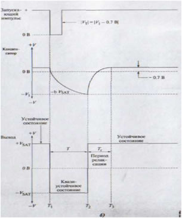
Рис.1. Очікуючий мультивібратор на операційному підсилювачі і його часові діаграми
Ця схема побудована на компараторі напруг. Коли на обох входах однакові потенціали, диференціальна вхідна напруга дорівнює нулю, отже, вихідна напруга також дорівнює нулю. Але, якщо напруга на вході V -in не збігається з напругою на вході V -in, на виході встановиться або позитивне, або негативне значення напруги насичення завдяки високому коефіцієнту підсилення підсилювача. Робота очікуючого мультивібратора залежить від співвідношення між напругами V -in й V +in. Тому необхідно розглядати чотири стани очікуючого мультивібратора: стійкий, перехідний , квазістійкий та період релаксації.
Стійкий стан
Спочатку вихідна напруга становить +V SAT. Конденсатор буде позитивно заряджатися, оскільки напруга буде надходити в RС - ланцюг. Але, через те, що конденсатор С1 шунтується діодом напруга на конденсаторі зафіксується на рівні +V D1. Для кремнієвих діодів (наприклад, для IN914 або IN4148) значення напруги становить приблизно +0.7 В (DС). Таким чином, у стійкому стані на інверсному
вході -IN зберігається рівень +0.7 В. Неінвертуючий вхід +IN зміщується на рівень V1, що дорівнює:
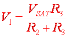
Диференціальна вхідна напруга підсилювача, дорівню є V1 >VD1, або V1-0,7B.
Доти, поки виконується нерівність V1 >VD1 на інвертуючому вході підсилювача буде негативна диференціальна напруга постійного струму і на виході буде залишатися напруга насичення +V SAT (рис. 1, б).
Перехідний стан
Сигнал запуску надходить на вхід очікуючого мультивібратора через RC-ланцюжок R4, С2. При розрахунках цього ланцюжка варто виходити із правила, що його постійна часу не повинна перевищувати однієї десятої постійної часу
часозадаючого ланцюжка:
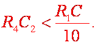
Протягом часу відбувається різка зміна рівня сигналу запуску від високого до низького, де пікове значення становить менше, ніж (V1 - 0.7) В. За таких умов полярність напруги на вході одновібратора міняється на зворотну, і тепер на інвертуючому вході установлюється позитивна напруга (V1+Vt-0.7), що менше напруги VD1. Вихідна напруга , різко змінюється на -V SAT.
На виході очікуючого мультивібратора у проміжку між Т1 і Т2 зберігається квазістійкий стан. Він називається квазістійкий, тому що протягом відрізка Т = Т2- Т1 - вихідний сигнал не змінюється, але як тільки проміжок Т закінчується, час квазістійкого спокійного стану минає, і одновібратор переходить у стійкий стан, тобто напруга на виході змінюється на +V SAT.
В час квазістійкого стану діод D1 , зміщений у зворотному напрямку, а конденсатор C1 розряджається від напруги +0.7 В до нуля й потім перезаряджається на протилежну полярность до напруги -V SAT. Коли негативна напруга на виході – досягне значення -V1 величина диференціальної вхідної напруги перетне нульову позначку, і ця зміна знову приведе до різкої зміни напруги на виході +V SAT.
Після закінчення часу квазістійкого стану схема переходить у стійкий стан, де й перебуває чекаючи наступного імпульсу запуску.
Період релаксації
Протягом часу Т2 напруга на виході змінюється від -V SAT до +V SAT. Незважаючи на те що час квазістійкого стану минув, схема ще не готова до прийому наступного імпульсу запуску. Перехідний стан у проміжку між Т1 і Т2 характеризується тим, що на виході вже встановився стійкий стан, але вхід ще не може приймати новий імпульс. Тривалість такого стану визначається розрядкою конденсатора С1 до значення, при якому буде виконуватися умов Vt <(V1-0.7)B.
2. Модуляція сигналів
Смуга частот більшості сигналів, що несуть інформацію, лежить у діапазоні низьких частот. Зокрема, смуга частот людського голосу охоплює інтервал від 20 Гц до 20000 Гц. У той же час для передачі сигналу каналами радіозв'язку за допомогою електромагнітних хвиль використовують частоти у десятки й сотні мегагерц. Отже, сигнал, у якому закодована інформація, потрібно перенести з діапазону низьких частот у діапазон радіочастот, передати цей сигнал за допомогою радіохвиль на досить значну відстань, прийняти його і повернути в інтервал низьких частот для сприйняття його споживачем.
Процес перенесення сигналу з діапазону низьких частот до радіочастот називається модуляцією сигналу. Зворотний процес перенесення сигналу з діапазону радіочастот до низьких (звукових) частот називається демодуляцією (детектуванням) сигналу.Модуляцію сигналу можна здійснювати різними способами, відповідно до яких розрізняють амплітудну, частотну і фазову модуляції.
Радіосигнал високої частоти r(t), за допомогою якого інформація передається через радіоканал за допомогою радіохвиль, називається несучим сигналом, а йогочастота ω0 – несучою частотою.
де А - амплітуда сигналу; ψ - початкова фаза.
Сигнал низької частоти, який несе інформацію, називається модулюючим сигналом:
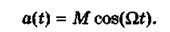
2.1. Амплітудна модуляція
Амплітудна модуляція полягає у зміні амплітуди А несучого сигналу r(t) відповідно до модулюючого сигналу а(t). Миттєве значення амплітудно-модульованого сигналу має вигляд:
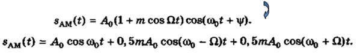
Відхилення амплітуди радіочастотного сигналу відносно середнього значення амплітуди називається коефіцієнтом амплітудної модуляції (рис. 3):
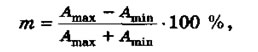
де Amax, Аmin — максимальна та мінімальна амплітуди радіосигналу;
A0 = 0,5 (Amax + Аmin) — амплітуда немодульованого сигналу.
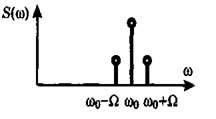
Рис. 2. Амплітудно - модульований сигна
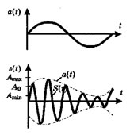
Рис. 3. Відхилення амплітуди радіочастотного сигналу відносно середнього значення амплітуди
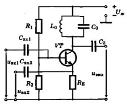
Рис. 4. Резонансний підсилювач
2.2. Частотна модуляція
Частотна модуляція полягає у зміні частоти радіосигналу відповідно до сигналу, що несе інформацію (модулюючого сигналу). Амплітуда адіосигналу залишається сталою, що є перевагою частотної модуляції. Якщо модулюючий сигнал змінюється за законом а(t) = М соs(Ωt), то частотно-модульований радіосигнал має вигляд Sчм (t) = А0 cos [( ω0 + М cosΩ)t +ψ0], де ψ0 - початкова фаза радіосигналу;
M - індекс частотної модуляції.
Девіацією частоти називається максимальне відхилення частоти ∆ωmax від її середнього значення ω0.
Рис. 5. Частотна модуляція
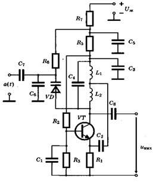
Рис. 6. Автогенератор
Sфм(t) = A0 cos [ω0 t + ∆φmaxcos Ωt +ψ0] - фазова модуляція
3. Електронна арифметика
3.1. Загальні відомості про інформацію
Цифрові пристрої є складовою частиною всіх ЕОМ, систем автоматичного управління, автоматизованого управління і призначені для обробки, зберігання і передачі дискретної (цифрової) інформації.
У вузькому сенсі слова інформація – віддзеркалення реального світу. З погляду зв'язківців і електронщиків – інформація - це будь-які відомості, що є об'єктом зберігання, передачі і перетворення. Інформацію, втілену і зафіксовану в деякій матеріальній формі, називають
повідомленням і передають за допомогою сигналів.
Сигналом можуть служити будь-які фізичні явища або об'єкти, зміна параметрів яких в часі несе інформацію в прямому або закодованому виді (світло, звук, напруга, струм, тиск, і так далі). У загальному випадку інформаційне повідомлення може бути представлене у вигляді функції x(t). Причому ця функція може приймати будь-які речові значення в діапазоні зміни аргументу t. Наприклад, зміна температури в часі і так далі. Інформаційне повідомлення може мати як безперервний, так і дискретний характер (рис.7, а і 7, б відповідно).
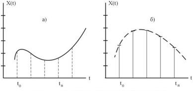
Рис. 7. Графічне представлення сигналів: а) безперервного; б) дискретного
3.2. Представлення чисел в сучасних цифрових пристроях
Система числення - це код, в якому використані спеціальні символи для позначення кількості яких би то об'єктів. Кількість символів в системі числення носить назву його основи. Наприклад, система числення з основою 10 має десять символів від 0 до 9. Система числення з основою два містить всього два символи, ця система називається двійковою системою числення. У шестнадцатеричній системі використовується 16 символів і так далі.
Чим менше основа системи числення, тим більше розрядів потрібно для представлення однієї і тієї ж кількості об'єктів. Кількісне значення символу визначається його номером розряду, тобто місцем розташування цього символу в числовому ряду.
Десяткова система числення. Основа цієї системи числення Р=10, тому що для запису цифр розрядів використовується десять символів. Як приклад візьмемо десяткове число 523.0. Тут цифра 5 позначає число 500, тому що воно займає по порядку 3-й розряд зліва від десяткової крапки.
523 = 5∙102 + 2∙101 + 3∙100 - звідси витікає, що кожен розряд має свою “вагу”.
Залежно від номера розряду (тобто від номера позиції символів) розряди мають наступні вагові коефіцієнти
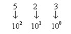
Таким чином, ваговий коефіцієнт розряду в загальному випадку визначається як Рn-1, де n - порядковий номер розряду після точки (для цілих чисел зазвичай точка не указується, але мається на увазі). Розряди справа після точки мають наступні ”ваги”: Р-1, Р-2 і так далі.
Шестнадцатерічная система числення. Основа цієї системи Р = 16 і для запису цифр розрядів використовуються 16 символів 0, 1, 2 . . . 9, А, В, С, D, Е, F. Вагові коефіцієнти визначаються як Рn-1, тобто мають значення 1, 16, 256, 4096, і так далі.
DE,1B16=D·161+E·160+1·16-1+B16-2=13·161+14·160+1·16-1+14·16-2=222,1051010
Двійкова система числення. Поняття вагових коефіцієнтів зберігається і для чисел двійкової системи числення (основа Р = 2). Розглянемо приклад, де число представлене в двійковій системі числення і має вид 11011012 (індекс "2" в кінці числа показує, що число представлене в двійковій системі числення).
Десятковий еквівалент цього числа, тобто значення числа в звичній для нас системі числення, визначимо, використовуючи вагові коефіцієнти розрядів символів
11011012=1·26+1·25+0·24+1·23+1·22+0·21+1·20=1·64+1·32+0·16+1·8+1·4+0·2+1·1=10910.
Таким чином, десятковий еквівалент двійкового числа визначається як сума вагових коефіцієнтів розрядів, що мають одиничний співмножник.
У цифровій техніці часто використовується і двійково-десяткова система числення. При цьому кожен розряд десяткового числа представляється чотирма розрядами двійкового числа. Очевидно, що при цьому використовуються не всі значення чотирьохрозрядного двійкового числа, оскільки воно може реалізувати числа від 0 до 15, а в двійково-десятковій системі використовуєтьсялише значення від 0 до 9.
873,2510=1000 0111 0011, 0011 01012 873,2510=100 001 110 011, 001 101 0102
8 7 6 2 5 (16) 4 1 6 3 1 5 2 (8)
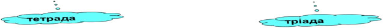
3.3. Арифметичні основи цифрових пристроїв
Складання і віднімання двійкових чисел. Правила складання двох двійкових чисел:
0+0=0
0+1=1
1+0=1
1+1=0 і перенесення 1 в старший розряд.
Складання багаторозрядних чисел:
перенос 1 в старші розряди
18= 010010
+ 23= 010111
41= 101001
Віднімання в цифрових пристроях проводиться також як і складання, тільки від'ємник представляється в додатковому коді
23 = 00010111
+
-18 = 11101110
5 = 00000101